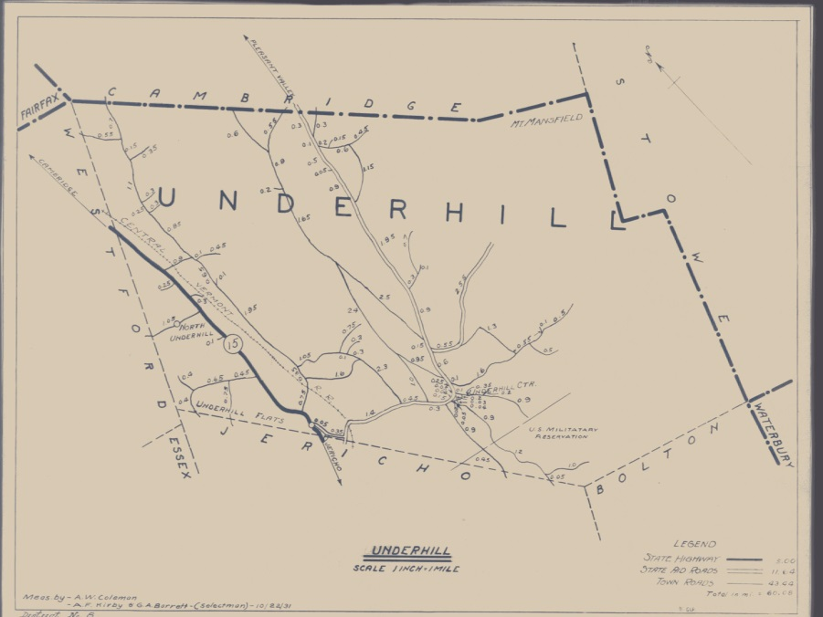
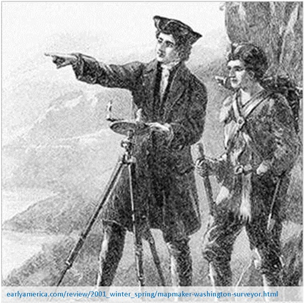
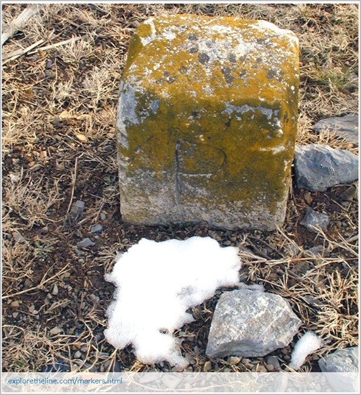
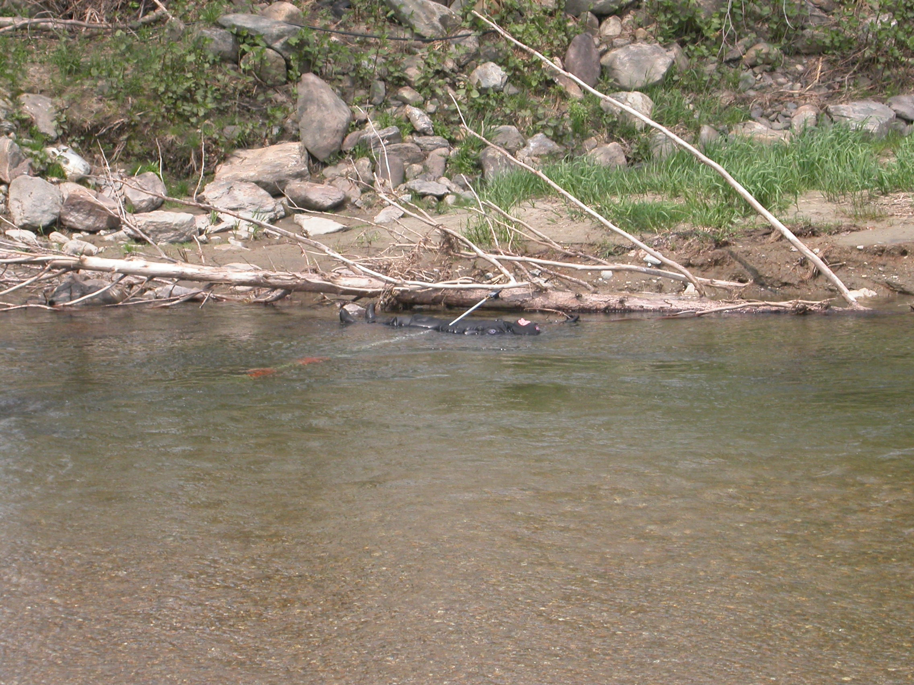

GIS @ VTrans
Johnathan Croft
VTrans Mapping Section Chief
Town Highway Maps & Mileage
Town Highway Maps & Mileage
Town Highway Maps & Mileage Production of the Mileage Summaries
Town Highway Maps & Mileage Mileage data used in formula for appropriation for State Aid for Town Highway maintenance
Town Highway Maps & Mileage Mileage used in local Vehicle Miles Traveled calculations
Route Log System
 Map No. 1 & State Highway Map
Map No. 1 & State Highway Map Rural Functional Class Map
Rural Functional Class Map
Rural Functional Class Map
District Maps
District Maps
District Maps
2012 Traffic Flow Map
2012 Traffic Flow Map
Bridge Inventory Maps
Scenic Byway Maps
Scenic Byway Maps
Scenic Byway Maps
Scenic Byway Maps
Scenic Byway Maps
Map Archive
 Map Archive
Map Archive
Map Archive
Act 178 - Ancient Roads
Act 178 - Ancient Roads
 Act 178 - Ancient Roads
Act 178 - Ancient Roads Long Range Transportation Business Plan Maps
Long Range Transportation Business Plan Maps
Long Range Transportation Business Plan Maps
Long Range Transportation Business Plan Maps
Special Projects
Special Projects
Johnathan Croft 802-828-2600 johnathan.croft@state.vt.us
Nina Safavi
Survey & GIS Project Manager
NS Background
Surveying & ROW



How to get involved now
Stephen Smith
Rail GIS Guru
SS Background
Rail
Anything else?
Questions?